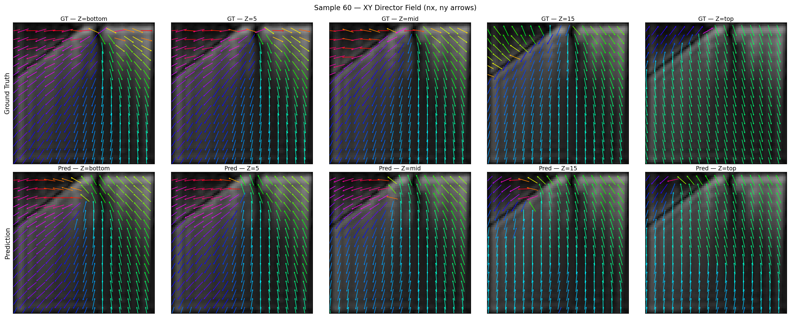

Unlike a simple resume entry, this research project explored the critical convergence point of soft matter physics and deep computer vision models. The engineering challenge lay in extracting precise directional metadata from structural physical samples.
Instead of standard off-the-shelf image classifiers, I adapted and optimized a custom Convolutional Neural Network pipeline. The architecture specialized in extracting structural fields by utilizing custom-weighted processing layers designed specifically for processing polarized material variations.
